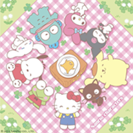

About Me 💖

Hello! I'm Bian Jingyi, the creator of this Sanrio character gallery. 🌸 I made this website to share the charm of Sanrio characters with everyone who loves cute things. I’ve always been inspired by the pastel colors, magical stories, and sweet personalities of Sanrio characters. Each character brings a smile and a little bit of magic to everyday life, and I hope to share that joy with you here.


This project is also part of my web technology learning journey. I hope you enjoy browsing it as much as I enjoyed creating it! Thank you for visiting and exploring my Sanrio gallery — where every day is soft, colorful, and filled with happiness! 🌈✨